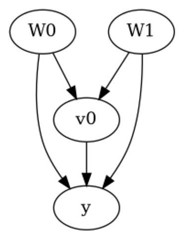

TabPFN Estimator - Example Notebook#
For causal estimation, TabPFN is used here as the outcome model in backdoor adjustment. Its competitive out-of-the-box performance on small tabular datasets — without requiring hyperparameter tuning — makes it a practical alternative to conventional regression models, especially when the functional form of the outcome is unknown.
TabPFN is best suited for datasets with up to 10,000 samples and up to 500 features. It should not be used for large datasets, time-series data, or outcomes with more than 10 distinct classes. While TabPFN can run on CPU, GPU execution is recommended for larger ensemble sizes.
What We Demonstrate#
We walk through the standard DoWhy pipeline using TabpfnEstimator on a small synthetic dataset, and show how to configure the estimator for different compute environments: CPU, single GPU, and multi-GPU.
pip install tabpfn torch.huggingface-cli login or the HF_TOKEN environment variable.[1]:
import importlib.util
import os
HAS_TABPFN = importlib.util.find_spec("tabpfn") is not None
HAS_TORCH = importlib.util.find_spec("torch") is not None
HAS_HF_TOKEN = bool(os.environ.get("HF_TOKEN"))
HAS_TABPFN_TOKEN = bool(os.environ.get("TABPFN_TOKEN"))
TABPFN_AVAILABLE = HAS_TABPFN and HAS_TORCH and (HAS_HF_TOKEN or HAS_TABPFN_TOKEN)
if TABPFN_AVAILABLE:
print("TabPFN prerequisites detected. Running TabPFN estimate cell.")
else:
missing = []
if not HAS_TABPFN:
missing.append("tabpfn")
if not HAS_TORCH:
missing.append("torch")
if not (HAS_HF_TOKEN or HAS_TABPFN_TOKEN):
missing.append("HF_TOKEN or TABPFN_TOKEN")
print("Skipping TabPFN estimate cell; missing prerequisites: " + ", ".join(missing))
Skipping TabPFN estimate cell; missing prerequisites: tabpfn, HF_TOKEN or TABPFN_TOKEN
[2]:
import dowhy
import dowhy.datasets
from dowhy import CausalModel
Generate Data#
[3]:
data = dowhy.datasets.linear_dataset(
beta=10,
num_common_causes=2,
num_instruments=0,
num_treatments=1,
num_samples=500, # increase this for on GPU mode
treatment_is_binary=True,
outcome_is_binary=False,
)
df = data["df"]
print(df.head())
W0 W1 v0 y
0 1.343022 -0.724664 True 9.121527
1 0.756567 -0.238670 True 9.807150
2 0.712846 -0.448653 False -0.580357
3 0.596315 0.593085 True 11.283782
4 -1.809846 -0.975334 False -2.387581
Initialize Causal Models & Identify Estimand#
CausalModel from the synthetic dataset using the graph encoded in data["gml_graph"].[4]:
model = CausalModel(
data=df,
treatment=data["treatment_name"],
outcome=data["outcome_name"],
graph=data["gml_graph"],
)
[5]:
model.view_model()

[6]:
identified_estimand = model.identify_effect(proceed_when_unidentifiable=True)
print(identified_estimand)
Estimand type: EstimandType.NONPARAMETRIC_ATE
### Estimand : 1
Estimand name: backdoor
Estimand expression:
d
─────(E[y|W0,W1])
d[v₀]
Estimand assumption 1, Unconfoundedness: If U→{v0} and U→y then P(y|v0,W0,W1,U) = P(y|v0,W0,W1)
### Estimand : 2
Estimand name: iv
No such variable(s) found!
### Estimand : 3
Estimand name: frontdoor
No such variable(s) found!
Estimate Effect#
method_params differ by compute environment — choose the configuration that matches your available hardware.CPU#
This is the default configuration. We use n_estimators=4 to keep runtime reasonable on CPU while still producing a reliable estimate. If TabPFN prerequisites are unavailable in your environment, the estimate cell below will be skipped.
[7]:
if TABPFN_AVAILABLE:
causal_estimate = model.estimate_effect(
identified_estimand,
method_name="backdoor.tabpfn",
method_params={
"model_type": "auto",
"n_estimators": 16,
"use_multi_gpu": False,
},
)
print("Causal Estimate is " + str(causal_estimate.value))
else:
print("TabPFN estimation skipped in this environment.")
TabPFN estimation skipped in this environment.
Single GPU#
When a single GPU is available, TabPFN automatically uses it via torch.cuda. Increase n_estimators to 8 or more for better accuracy when compute allows.
[8]:
# Uncomment to run on a single GPU
# causal_estimate = model.estimate_effect(
# identified_estimand,
# method_name="backdoor.tabpfn",
# method_params={
# "model_type": "auto",
# "n_estimators": 16,
# "use_multi_gpu": False, # single GPU is picked up automatically
# },
# )
# print("Causal Estimate is " + str(causal_estimate.value))
Multi-GPU#
With multiple GPUs, TabPFN splits the training data across devices using multiprocessing and averages the resulting predictions. Set use_multi_gpu=True to enable this mode; device IDs are auto-detected from torch.cuda.device_count(), or you can specify them explicitly with the device_ids parameter.
[9]:
# Uncomment to run on multiple GPUs
# causal_estimate = model.estimate_effect(
# identified_estimand,
# method_name="backdoor.tabpfn",
# method_params={
# "model_type": "auto",
# "n_estimators": 16,
# "use_multi_gpu": True,
# # "device_ids": [0, 1], # optional: specify GPU indices explicitly
# },
# )
# print("Causal Estimate is " + str(causal_estimate.value))
References#
Hollmann, N., Müller, S., Eggensperger, K., and Hutter, F. TabPFN: A Prior-Data Fitted Network for Tabular Data. ICLR (2023). https://arxiv.org/abs/2207.01848
Hollmann, N., Müller, S., Purucker, L., Krishnakumar, A., Körner, M., Hoo, R., Schirrmeister, R. T., and Hutter, F. Accurate predictions on small data with a tabular foundation model. Nature (2025). https://doi.org/10.1038/s41586-024-08328-6